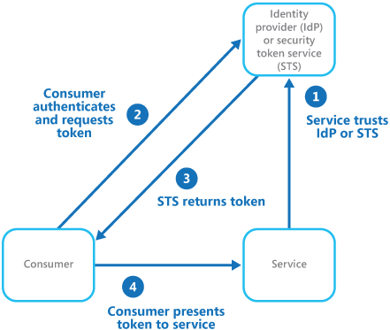

Introduction
What is an API?
An API (Application Programming Interface) is a collection of protocols, functions, and tools used for developing applications. These interfaces are utilized in numerous modern applications including e-commerce, social networks, cloud computing, and mobile development. They are many different types of APIs which all interact with clients in notably different ways. Because of these differences, each type of API possesses different security needs. For our purposes we will be solely focusing on request based APIs which interact with clients remotely. This distant relationship with clients introduces an enormous amount of security vulnerabilities into this type of API.
What is the API Stronghold?
The API stronghold outlines four paradigms which encapsulate the entire topic of API security. These four defenses (Authorization, Authentication, Federation, Delegation) are each explained in greater detail below. Distinguishing these four fundamental qualities of API security provides valuable insight into common practices shared between APIs with vastly different security needs.
The Four Defenses
Authentication
What is Authentication?
This layer of API security articulates an API's need to identify clients.
Why do we need it?
Authentication is of paramount importance to API Security as it enables interfaces to successfully identify and award clients appropriate permissions and access to data. Authentication systems allow APIs to maintain relationships between clients and data which in many cases has persisted throughout multiple sessions. Social media login systems are good examples of this security layer as they utilize client credentials to successfully identify clients and then in turn provides those individuals with relevant content.
Authorization
What is Authorization and how is it different from Authentication?
Authorization and Authentication are easily confused as they both involved in the process of allowing users to access their relevant data. However, these two layers articulate two entirely separate paradigms in the discussion of API security. Authentication, as previously explained, is the means by which an API identifies a client. Authorization is the means by which an API interprets a client's identity and in turn determines that user's permissions and access to data. The separation of these two layers is beneficial in the topic of API security because it articulates that the vulnerabilities and implementation details of these systems should be occur separately regardless of their dependence upon one another.
Why do we need it?
Regulating appropriate client access to API assets is pivotal to the success of API security as it ensures that clients can only interact with data in predictable, pre-planned ways. When considering the amount of security attacks which exploit vulnerabilities in file system architectures the relevance of this security layer becomes increasingly apparent.
Federation
What is Federation?
Federation is short for federated identity management(FIdm) which consists of having a set of policies and protocols in order to manage the identity of API users and devices. Many companies want to share resources with other companies or partners but a problem arises when each business is a separate security realm with independent security measures. One answer to this problem is FIdM. For example, single sign on (SSO), which is a subset of FIdM, allows a user's auth token to be used across multiple systems or organizations. The picture below illustrates a simple federated identity management system.

Source: https://msdn.microsoft.com/
By using federated identity management you are able to separate the authentication code from the application code and instead delegate the authentication of your API to a trusted identity provider (IdP). The end user will then talk to the identity provider to get a security token service (STS) token. This STS token might contain more information that just authentication information such as address, contacts, roles, and other data. After the user acquires the STS token they are now able to use the service or API since the API has trusted the IdP to authenticate the users. They are many examples of federated identity management systems such as Microsoft's Active Directory Federation Service and social identity providers like Google and Facebook.
Why is Federation important?
Federation is important since users tend to have numerous passwords and keeping track of all of them is difficult. By using a FIdM system you can help out your user and still stay secure by allowing them to use one login for multiple APIs. Without a FIdM system the administrators of the API must keep track of the credentials for all the users and is responsible for performing tasks such as password reminders and resets which add to the attacks surface of the API.
Delegation
What is Delegation?
Delegation is the process by which access and rights of an API are given to authorized users. There are two different levels of delegation. First is delegation at the authentication/identity level and second is delegation at the authorization/access level. This is where the difference between authorization and authentication becomes significant.
Delegation at the authentication/identity level is when an authentication mechanism provides an identity to a user that is different from the validated identity of that user. However first the previous owner of new identity must first approve of this user switching identities. A great example of this is the sudo command in UNIX systems. In order to use the sudo command a user must start their session assuming their regular identity and then after running sudo they type in a password to ensure the admin approves this identity switch and finally the regular user is now an admin.
Delegation at the authorization/access control level is the process of determining who can and who cannot read, update, and delete certain files or data. The most common mechanism for access delegation is an access control list (ACL). For example a end user might be allowed to read data but isn't allowed to write or delete data. This type of restriction would be handles with an ACL and is an example of delegation.
Current Standards
For this section picture yourself as the lead developer at a software development company and your job is to begin building the new API for your company's application. Your first inclination might first be how will the API be structured but in fact if security is kept in mind throughout the development process it generally leads to a more secure API. The following sections will explain some ways to go about securing your API from the beginning to the end. Since there are numerous different types of APIs and ways to secure them the sections below are not an exhaustive list of security measures but rather just some common techniques. Also for the sections below we chose to use a REST API as they are becoming more popular among developers.
Authentication and Authorization
Choosing the right authentication protocol for your API isn't a trivial decision. The options range from using basic API authentication with transport layer security (TLS) to using the OAuth1 authentication protocol or possible even creating a custom protocol (not recommended). First off I will explain how you can secure your API with basic TLS and some of its pros and cons. Basic Authentication is the easiest of the major authentication protocols to implement mainly because it doesn't require any external libraries as the libraries required are standard in my languages and frameworks. Basic authentication works by sending the user's credentials over the network in a base64 encoding and by using SSL these are hidden from network snoopers. A large downside of using basic authentication is that the password is sent over with every request made which increase the attack surface.
Another common authentication protocol is called OAuth1 which is one of the most secure protocols. OAuth1 uses a cryptographic signature based protocol using the HMAC-SHA1 message authentication code algorithm. The huge benefit of using OAuth is that it doesn't require the secret token to ever cross the network and therefore limiting the attack space of the API. Since the token is never passed across the network you could use OAuth1 without using SSL but it is highly recommended if the data the API transfers is sensitive. However there is a downside to using OAuth1. That is that you have to follow a strict sets of rules and use specific hashing algorithms to get the correct key. While most popular programming languages have a library to help with this it can still be confusing.
There are many other authorization protocols that I didn't explain here but some of them are OAuth2, OpenID, and Kerberos. As mentioned earlier it is also possible to develop your own custom authorization protocol but this is not recommended unless you have a deep understanding of cryptographical techniques. Not only will your custom protocol be difficult to implement but then only you will know how to use it and other developers who might want to use your API will have difficulty connecting securely.
Input Validation
Mismanagement of user input is one of the leading causes of API hacks. Some of the most common ones are SQL injection attacks and cross site scripting. In order to prevent these attacks you must make sure that all user inputs are sanitized. Next consider rate limiting the requests to a certain number of requests per hour or day to prevent fuzzing. There are also others ways to prevent attacks by strongly typing incoming data. This means for an input only accept numbers, characters, or some other acceptable value that makes sense in the context. This increases the difficulty of attacks against your API. Commonly REST APIs allow for multiple response types and the client will specify the order of response types in the Accept header of the request. Validate incoming content types by comparing the Content-Type header of the POST or PUT request with the format of the actual data. If the API encounters mismatching content or a missing content header it should respond with a 406 Not Acceptable response.
Other Security Measures
There are many other security measures that should be taken when building an API. The most common type of attack carried out in recent years has been the distributed denial of service (DDoS) attack. These attacks are orchestrated by huge networks of infected devices to flood a targeted server with HTTP requests over and over until the server can no longer provide services to normal users. The attacks can be tricky to defend against but there are ways of slowing them down for example limiting the request a user can make. There are also plenty of other attacks not mentioned here that deserve attention when building an API but this could get you started thinking about security first rather than later in the design process.
Pokemon Go Case Study
Last July, Pokemon Go was released by a mobile development company called Niantic and immediately caught on like wildfire. The interactive mobile game had amassed over 100 million downloads in just over a month. With this huge user base came overloaded servers, location issues, app malfunctions, and naturally attackers targeting Pokemon Go's API.
One of the unique characteristics of the game is that the user is able to play in an augmented reality environment on a mobile device. Pokemon that are close to a user's location are shown on the game's map allowing the user to attempt to capture them. However only the Pokemon within roughly 500 meters of the user are shown on the map. To attackers this meant that if it was possible to send fake coordinates to Pokemon Go's API then you could reveal the location of Pokemon everywhere. This hack was exactly what was pulled off by a reddit user.
In order to pull off this hack you first needed to install some MITM attack or network snooping software such as Charles with SSL Proxy which allows the user to decrypt their own HTTPS messages using a SSL Proxy. Besides the network tools the user also needs to have some way of decoding binary(.bin) files which is the format in which the Pokemon Go API sends back its data. To decode these .bin files you can use the protoc command and the .proto file provided by this specific reddit user to decode the files. For more information on .proto files and how they are used click here. Once this is setup the user can then connect to Pokemon Go and read the unencrypted responses with Charles and decode the binaries sent back. Once these binaries are decoded you can view in plaintext the locations of nearby Pokemon and just fake new coordinates to build an entire map of Pokemon locations.
Other attackers have taken this hack to another level and built software to automatically "farm" Pokemon without the user even moving. In response to this Niantic released a new version of Pokemon Go that created hidden data called Unknown 6 (U6) that somehow used hashed encryption to hide the user's gps coordinates in order to send them to the server. However this U6 algorithm changed with every tick of Pokemon Go's internal "heartbeat" timer. In theory, this only allowed a valid game client to create valid U6 hashes and allowed for Niantic to easily be able to detect bots and hackers trying to spoof game info. Unfortunately for Niantic, this U6 generation algorithm was cracked within 3 days of the new release. After breaking the new algorithm the attackers built their own 3rd party API which allows for Pokemon Go bots and hacks to play the game.
When looking at this attack we see that sometimes attacks don't even have to lead to a security breach of a server or API to be effective. In this example attackers were able to use spoofing and API farming to gain valuable data that the developers didn't want released. So even though Pokemon Go's servers could of been completely secure to sql injection attacks attackers still found a way to break something. This is a prime example of the point made earlier that API security isn't simply a one size fits all approach, it takes multiple systems and protocols to attempt to cover an APIs entire attack surface.
Summary
In conclusion, building an API that is completely secure is very difficult in today's world. Big name companies such as Snapchat, Twitter, Tinder, and Niantic have all suffered from API security hacks in recent years. Not only do these attacks release secure user information but they are also extremely expensive to cleanup and repair. The graphic below shows that many of the types of attacks have yet to be discovered with new attacks being created all the time. However as the designer of the API you can prevent many of these attacks by staying up to date with the latest software patches, authorization protocols, encryption algorithms, and anti attack technologies.

Source: http://blog.smartbear.com/
References and Further Readings
http://nordicapis.com/api-security-the-4-defenses-of-the-api-stronghold/https://www.soapui.org/testing-dojo/world-of-api-testing/state-of-api-security.html
https://www.akana.com/solution/api-security
http://searchsecurity.techtarget.com/tip/API-security-How-to-ensure-secure-API-use-in-the-enterprise
https://www.owasp.org/index.php/REST_Security_Cheat_Sheet
https://medium.com/aws-activate-startup-blog/api-security-for-modern-web-apps-a6a7f226a6d#.iafkk02i0/
http://blog.smartbear.com/readyapi/api-security-testing-how-to-hack-an-api-and-get-away-with-it-part-1-of-3/
http://arstechnica.com/gaming/2016/07/how-hackers-are-revealing-the-hidden-pokemon-go-monsters-all-around-you/
https://www.reddit.com/r/pokemongodev/comments/4svl1o/guide_to_pokemon_go_server_responses/
http://en.yibada.com/articles/150277/20160810/pokemon-go-tracking-app-pokemon-go-tricks-and-tips-pokemon-go-bots-and-hacks-best-gps-spoofing-app-pokemon-go.htm